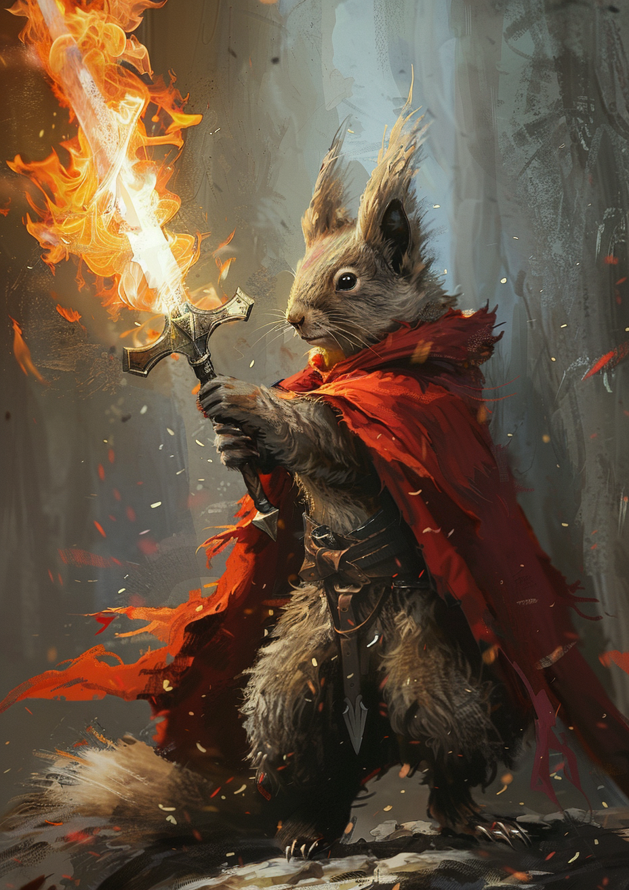

Professor S
Squirrel extraordinaire, doer of all things, lawful good

Armor Class 19 (Natural Armor) Hit Points 225 (18d12 + 108) Speed 40 ft., burrow 30 ft., fly 80 ft.
STR DEX CON INT WIS CHA 25 10 23 16 15 19 (+7) (+0) (+6) (+3) (+2) (+4) Saving Throws DEX +5, CON +11, WIS +7, CHA +9 Skills Perception +12, Stealth +5 Damage Immunities Lightning Senses Blindsight 60 ft., Darkvision 120 ft., Passive Perception 22 Languages Common, Draconic Challenge 16 (15,000 XP)
Legendary Resistance (3/Day). If the dragon fails a saving throw, it can choose to succeed instead.
Actions
Multideploy. Prof S is helped you deploy your app on multiple disconnected systems.
Crossplane. Melee Weapon Attack: +12 to hit, reach 10 ft., one target. Hit: 18 (2d10 + 7) piercing damage plus 5 (1d10) lightning damage.
Argo Sync. Melee Weapon Attack: +12 to hit, reach 5 ft., one target. Hit: 14 (2d6 + 7) slashing damage.
Tail. Melee Weapon Attack: view logs (I got nothing 🤷)
Comforting Presence. Each dev on dev team gains +15 confidence and ships code within a month.
Lightning Breath (Recharge 5–6). The dragon exhales lightning in a 90-foot line that is 5 feet wide. Each creature in that line must make a DC 19 Dexterity saving throw, taking 66 (12d10) lightning damage on a failed save, or half as much damage on a successful one.
Legendary Actions
Prof S can take 3 legendary actions, choosing from the options below. Only one legendary action option can be used at a time and only at the end of another creature's turn. The dragon regains spent legendary actions at the start of its turn.
Detect. The dragon makes a Wisdom (Perception) check.
Tail Attack. The dragon makes a tail attack.
Wing Attack (Costs 2 Actions). The dragon beats its wings. Each creature within 10 feet of the dragon must succeed on a DC 20 Dexterity saving throw or take 14 (2d6 + 7) bludgeoning damage and be knocked prone. The dragon can then fly up to half its flying speed.
🡐 Home